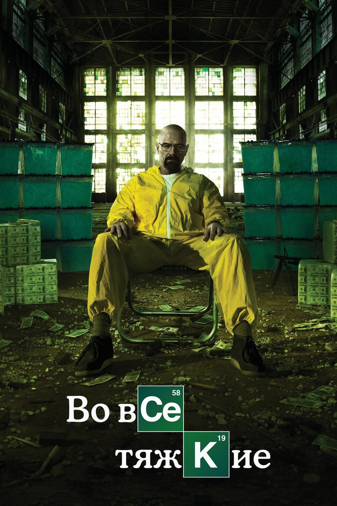

(нажми на картинку, чтобы увеличить)
Школьный учитель химии Уолтер Уайт, узнав о смертельном диагнозе, начинает варить метамфетамин, чтобы обеспечить семью. Его партнёром становится бывший ученик Джесси Пинкман.
© Все права защищены